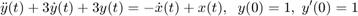
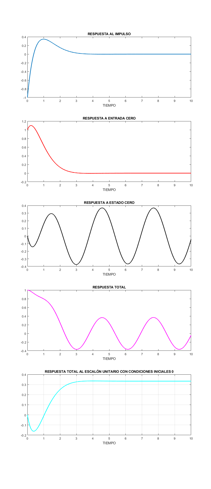
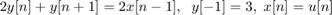
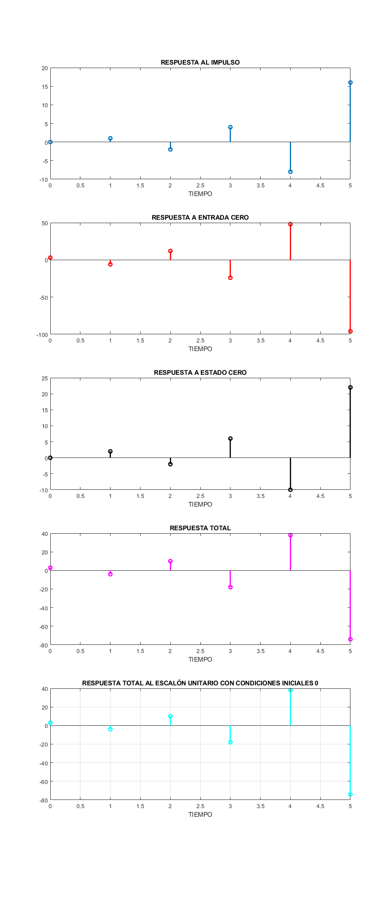
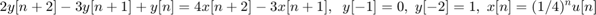
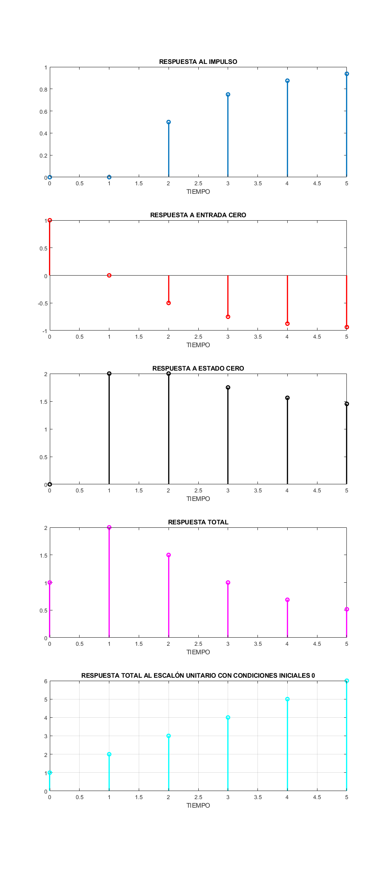

Práctica 9: Sistemas diferenciales y en diferencias
Contents
Integrantes
Portillo Martínez Arturo
Desarrollo
Para sistemas diferenciales realiza un programa con las siguientes características:
- Muestra la función de transferencia del sistema.
- Muestra la respuesta al impulso (simbólico, gráfica).
- Muestra la respuesta a entrada cero (simbólico, gráfica).
- Muestra la respuesta a estado cero (simbólico, gráfica).
- Muestra la respuesta total (simbólico, gráfica).
- La respuesta total al escalón con condiciones iniciales 0 (simbólico, gráfica).
- Usando subplot, depliega una figura con 5 gráficas.
Para sistemas en diferencias realiza un progra con las siguiente características :
- Muestra la función de transferencia del sistema.
- Muestra la respuesta al impulso (simbólico, gráfica, ver KroneckerDelta).
- Muestra la respuesta a entrada cero (simbólico, gráfica).
- Muestra la respuesta a estado cero (simbólico, gráfica).
- Muestra la respuesta total (simbólico, gráfica)).
- La respuesta total al escalón con condiciones iniciales 0 (simbólico, gráfica).
- Usando subplot, depliega una figura con 5 gráficas.
Sistemas Diferenciales
A continuación se muestra el código realizado para cumplir las características solicitadas.
function diferenciales(a,b,ciy,xi,t0) % Portillo Martínez Arturo % 2MV1 % Análisis de Señales y Sistemas % Sistemas diferenciales % ejemplo: resolver y^(2)+3y^(1)+3y = -x^(1)+x con y^(1)=1 % y(0)=1, x(t)=cos(2t)u(t), para 10 segundos, se resuleve como % syms t % diferenciales([3 3 1],[1 -1],[1 1],cos(2t)*heaviside(t),10) sympref('HeavisideAtOrigin', 1); close all tam=size(a); tami=size(b); syms y(t) Y(s) x(t) X(s) Yy fp trans imp(t) enCe(t) esCe(t) To(t) Te(t); syms edd edi edd=0; edi=0; % Función de transferencia for i=1:tam(2) edd=edd+a(i)*s^(i-1); end for i=1:tami(2) edi=edi+b(i)*s^(i-1); end mensaje('FUNCIÓN DE TRANSFERENCIA') disp('H(s)=') trans=edi/edd; pretty(trans) % Respuesta al impulso mensaje('RESPUESTA AL IMPULSO') disp('Respuesta al impulso=') imp(t)=ilaplace(trans); pretty(imp(t)) % Respuesta a entrada cero edd=0; edi=0; for i=1:tam(2) edd=edd+a(i)*s^(i-1)*Y(s); for k=1:i-1 edd=edd-a(i)*(s^(i-1-k)*ciy(k)); end end edd=collect(edd,Y(s)); edd=subs(edd,Y(s),Yy); eq1=edd==edi; edd=solve(eq1, Yy); mensaje('RESPUESTA A ENTRADA CERO') disp('Respuesta a entrada cero=') enCe(t)=ilaplace(edd); pretty(enCe(t)) % Respuesta a estado cero edd=0; edi=0; for i=1:tam(2) edd=edd+a(i)*s^(i-1)*Y(s); end for i=1:tami(2) edi=edi+b(i)*s^(i-1)*X(s); end edi=subs(edi,X(s), laplace(xi)); edd=collect(edd,Y(s)); edd=subs(edd,Y(s),Yy); eq1=edd==edi; edd=solve(eq1, Yy); mensaje('RESPUESTA A ESTADO CERO') disp('Respuesta a estado cero=') esCe(t)=ilaplace(edd); pretty(esCe(t)) % Respuesta total edd=0; edi=0; for i=1:tam(2) edd=edd+a(i)*s^(i-1)*Y(s); for k=1:i-1 edd=edd-a(i)*(s^(i-1-k)*ciy(k)); end end for i=1:tami(2) edi=edi+b(i)*s^(i-1)*X(s); end edi=subs(edi,X(s), laplace(xi)); edd=collect(edd,Y(s)); edd=subs(edd,Y(s),Yy); eq1=edd==edi; edd=solve(eq1, Yy); mensaje('RESPUESTA TOTAL') disp('y(t)=') To(t)=ilaplace(edd); pretty(To(t)) % Respuesta total al escalón con codiciones iniciales 0 edd=0; edi=0; for i=1:tam(2) edd=edd+a(i)*s^(i-1)*Y(s); end for i=1:tami(2) edi=edi+b(i)*s^(i-1)*X(s); end edi=subs(edi,X(s), laplace(heaviside(t))); edd=collect(edd,Y(s)); edd=subs(edd,Y(s),Yy); eq1=edd==edi; edd=solve(eq1, Yy); mensaje('RESPUESTA TOTAL AL ESCALÓN UNITARIO CON CONDICIONES INICIALES 0') disp('y(t)=') Te(t)=ilaplace(edd); pretty(Te(t)) % Gráficas figure (1) t=0:0.001:t0; hFig = figure(1); set(hFig, 'Position', [0 0 900 2250]) subplot(5,1,1) plot(t,imp(t),'LineWidth',2); title('RESPUESTA AL IMPULSO'); xlabel('TIEMPO'); subplot(5,1,2) plot(t,enCe(t),'r','LineWidth',2); title('RESPUESTA A ENTRADA CERO'); xlabel('TIEMPO'); subplot(5,1,3) plot(t,esCe(t),'k','LineWidth',2); title('RESPUESTA A ESTADO CERO'); xlabel('TIEMPO'); subplot(5,1,4) plot(t,To(t),'m','LineWidth',2); title('RESPUESTA TOTAL'); xlabel('TIEMPO'); subplot(5,1,5) plot(t,Te(t),'c','LineWidth',2); title('RESPUESTA TOTAL AL ESCALÓN UNITARIO CON CONDICIONES INICIALES 0'); xlabel('TIEMPO'); grid on end function mensaje(texto) disp( ' ') disp(texto) disp( ' ') end
Se puede consultar el archivo del código aqui
Entonces si se quiere resolver la ecuación diferencial

Hasta t=10.
syms t
diferenciales([3 3 1],[1 -1],[1 1],cos(2*t)*heaviside(t),10)
FUNCIÓN DE TRANSFERENCIA
H(s)=
s - 1
- ------------
2
s + 3 s + 3
RESPUESTA AL IMPULSO
Respuesta al impulso=
/ / sqrt(3) t \ \
| sqrt(3) sin| --------- | 5 |
/ 3 t \ | / sqrt(3) t \ \ 2 / |
-exp| - --- | | cos| --------- | - -------------------------- |
\ 2 / \ \ 2 / 3 /
RESPUESTA A ENTRADA CERO
Respuesta a entrada cero=
/ / sqrt(3) t \ \
| sqrt(3) sin| --------- | 5 |
/ 3 t \ | / sqrt(3) t \ \ 2 / |
exp| - --- | | cos| --------- | + -------------------------- |
\ 2 / \ \ 2 / 3 /
RESPUESTA A ESTADO CERO
Respuesta a estado cero=
sin(2 t) 4 cos(2 t) 13
---------- - -----------
37 37
/ / sqrt(3) t \ \
| sqrt(3) sin| --------- | 17 |
/ 3 t \ | / sqrt(3) t \ \ 2 / |
exp| - --- | | cos| --------- | - --------------------------- | 13
\ 2 / \ \ 2 / 13 /
+ ------------------------------------------------------------------
37
RESPUESTA TOTAL
y(t)=
sin(2 t) 4 cos(2 t) 13
---------- - -----------
37 37
/ / sqrt(3) t \ \
| sqrt(3) sin| --------- | 67 |
/ 3 t \ | / sqrt(3) t \ \ 2 / |
exp| - --- | | cos| --------- | + --------------------------- | 50
\ 2 / \ \ 2 / 75 /
+ ------------------------------------------------------------------
37
RESPUESTA TOTAL AL ESCALÓN UNITARIO CON CONDICIONES INICIALES 0
y(t)=
/ 3 t \ / / sqrt(3) t \ / sqrt(3) t \ \
exp| - --- | | cos| --------- | + sqrt(3) sin| --------- | 3 |
1 \ 2 / \ \ 2 / \ 2 / /
- - --------------------------------------------------------------
3 3
 Sistemas en diferencias
A continuación se muestra el código realizado para cumplir las características solicitadas.
function diferencias(a,b,ciy,cix,xi,n0) % Portillo Martínez Arturo % 2MV1 % Análisis de Señales y Sistemas % Sistemas en diferencias % ejemplo: resolver 2y[n]+y[n+1] = 2x[n-1] con y[-1]=3 %x[n]=u[n], para 5 segundos, se resuleve como % syms n % diferencias([1 2],[2],[3],[0],heaviside(n),5) sympref('HeavisideAtOrigin', 1); close all tam=size(a); tami=size(b); syms y(n) n z Y(z) x(n) X(z) Yy fp trans imp(n) enCe(n) esCe(n) To(n) Te(n); syms edd edi edd=0; edi=1; % Función de transferencia for i=1:tam(2) yd(i)=y(n+tam(2)-i); edd=edd+ a(i)*ztrans(yd(i)); end mensaje('FUNCIÓN DE TRANSFERENCIA') edd=subs(edd,ztrans(y(n),n,z), Y(z)); edi=subs(edi,ztrans(x(n),n,z), X(z)); for j=1:tami(2)-1 edi=subs(edi,x(tami(2)-1-j),0); end for j=1:tam(2)-1 edd=subs(edd,y(tam(2)-1-j),0); end edd=collect(edd,Y(z)); edd=subs(edd,Y(z),Yy); eq1=edd==edi; disp('H[Z]=') trans=solve(eq1, Yy); pretty(trans) % Respuesta al impulso mensaje('RESPUESTA AL IMPULSO') disp('Respuesta al impulso=') imp(n)=iztrans(trans); pretty(imp(n)) % Respuesta a entrada cero edd=0; edi=0; for i=1:tam(2) yd(i)=y(n+tam(2)-i); edd=edd+ a(i)*ztrans(yd(i)); end edd=subs(edd,ztrans(y(n),n,z), Y(z)); edi=subs(edi,ztrans(x(n),n,z), X(z)); for j=1:tami(2)-1 edi=subs(edi,x(tami(2)-1-j),cix(j)); end for j=1:tam(2)-1 edd=subs(edd,y(tam(2)-1-j),ciy(j)); end edi=subs(edi,X(z), 0); edd=collect(edd,Y(z)); edd=subs(edd,Y(z),Yy); eq1=edd==edi; edd=solve(eq1, Yy); mensaje('RESPUESTA A ENTRADA CERO') disp('Respuesta a entrada cero=') enCe(n)=iztrans(edd); pretty(enCe(n)) % Respuesta a estado cero edd=0; edi=0; for i=1:tam(2) yd(i)=y(n+tam(2)-i); edd=edd+ a(i)*ztrans(yd(i)); end for i=1:tami(2) xd(i)=x(n+tami(2)-i); edi=edi+ b(i)*ztrans(xd(i)); end edd=subs(edd,ztrans(y(n),n,z), Y(z)); edi=subs(edi,ztrans(x(n),n,z), X(z)); for j=1:tami(2)-1 edi=subs(edi,x(tami(2)-1-j),0); end for j=1:tam(2)-1 edd=subs(edd,y(tam(2)-1-j),0); end edi=subs(edi,X(z), ztrans(xi)); edd=collect(edd,Y(z)); edd=subs(edd,Y(z),Yy); eq1=edd==edi; edd=solve(eq1, Yy); mensaje('RESPUESTA A ESTADO CERO') disp('Respuesta a estado cero=') esCe(n)=iztrans(edd); pretty(esCe(n)) % Respuesta total edd=0; edi=0; for i=1:tam(2) yd(i)=y(n+tam(2)-i); edd=edd+ a(i)*ztrans(yd(i)); end for i=1:tami(2) xd(i)=x(n+tami(2)-i); edi=edi+ b(i)*ztrans(xd(i)); end edd=subs(edd,ztrans(y(n),n,z), Y(z)); edi=subs(edi,ztrans(x(n),n,z), X(z)); for j=1:tami(2)-1 edi=subs(edi,x(tami(2)-1-j),cix(j)); end for j=1:tam(2)-1 edd=subs(edd,y(tam(2)-1-j),ciy(j)); end edi=subs(edi,X(z), ztrans(xi)); edd=collect(edd,Y(z)); edd=subs(edd,Y(z),Yy); eq1=edd==edi; edd=solve(eq1, Yy); mensaje('RESPUESTA TOTAL') disp('y(n)=') To(n)=iztrans(edd); pretty(To(n)) % Respuesta total al escalón con codiciones iniciales 0 edd=0; edi=0; for i=1:tam(2) yd(i)=y(n+tam(2)-i); edd=edd+ a(i)*ztrans(yd(i)); end for i=1:tami(2) xd(i)=x(n+tami(2)-i); edi=edi+ b(i)*ztrans(xd(i)); end edd=subs(edd,ztrans(y(n),n,z), Y(z)); edi=subs(edi,ztrans(x(n),n,z), X(z)); for j=1:tami(2)-1 edi=subs(edi,x(tami(2)-1-j),cix(j)); end for j=1:tam(2)-1 edd=subs(edd,y(tam(2)-1-j),ciy(j)); end edi=subs(edi,X(z), ztrans(heaviside(n))); edd=collect(edd,Y(z)); edd=subs(edd,Y(z),Yy); eq1=edd==edi; edd=solve(eq1, Yy); mensaje('RESPUESTA TOTAL AL ESCALÓN UNITARIO CON CONDICIONES INICIALES 0') disp('y(n)=') Te(n)=iztrans(edd); pretty(Te(n)) figure (2) hFig = figure(2); set(hFig, 'Position', [0 0 900 2250]) n=0:1:n0; subplot(5,1,1) stem(n,imp(n),'LineWidth',2); title('RESPUESTA AL IMPULSO'); xlabel('TIEMPO'); subplot(5,1,2) stem(n,enCe(n),'r','LineWidth',2); title('RESPUESTA A ENTRADA CERO'); xlabel('TIEMPO'); subplot(5,1,3) stem(n,esCe(n),'k','LineWidth',2); title('RESPUESTA A ESTADO CERO'); xlabel('TIEMPO'); subplot(5,1,4) stem(n,To(n),'m','LineWidth',2); title('RESPUESTA TOTAL'); xlabel('TIEMPO'); subplot(5,1,5) stem(n,Te(n),'c','LineWidth',2); title('RESPUESTA TOTAL AL ESCALÓN UNITARIO CON CONDICIONES INICIALES 0'); xlabel('TIEMPO'); grid on end function mensaje(texto) disp( ' ') disp(texto) disp( ' ') end
Se puede consultar el archivo del código aqui
Entonces si se quiere resolver la ecuación diferencial

Hasta n=5.
syms n
diferencias([1 2],[2],[3],[0],heaviside(n),5)
FUNCIÓN DE TRANSFERENCIA
H[Z]=
1
-----
z + 2
RESPUESTA AL IMPULSO
Respuesta al impulso=
n
kroneckerDelta(n, 0) (-2)
-------------------- - -----
2 2
RESPUESTA A ENTRADA CERO
Respuesta a entrada cero=
n
3 (-2)
RESPUESTA A ESTADO CERO
Respuesta a estado cero=
n
2 2 (-2)
- - -------
3 3
RESPUESTA TOTAL
y(n)=
n
7 (-2) 2
------- + -
3 3
RESPUESTA TOTAL AL ESCALÓN UNITARIO CON CONDICIONES INICIALES 0
y(n)=
n
7 (-2) 2
------- + -
3 3
 Si se quiere resolver la ecuación diferencial

Hasta n=5.
syms n
diferencias([2 -3 1],[4 -3],[0 1],[0],((1/4)^n)*heaviside(n),5)
FUNCIÓN DE TRANSFERENCIA
H[Z]=
1
--------------
2
2 z - 3 z + 1
RESPUESTA AL IMPULSO
Respuesta al impulso=
/ 1 \n
kroneckerDelta(n, 0) - 2 | - | + 1
\ 2 /
RESPUESTA A ENTRADA CERO
Respuesta a entrada cero=
/ 1 \n
2 | - | - 1
\ 2 /
RESPUESTA A ESTADO CERO
Respuesta a estado cero=
/ 1 \n
16 | - |
/ 1 \n \ 4 / 4
4 | - | - --------- + -
\ 2 / 3 3
RESPUESTA TOTAL
y(n)=
/ 1 \n
16 | - |
/ 1 \n \ 4 / 1
6 | - | - --------- + -
\ 2 / 3 3
RESPUESTA TOTAL AL ESCALÓN UNITARIO CON CONDICIONES INICIALES 0
y(n)=
n + 1
